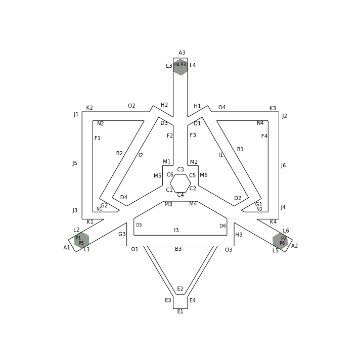

Adjustments are computed for the DELTA_RADIUS and DELTA_DIAGONAL_ROD firmware setting, and the endstop offsets, as are set by the M666 command in Johann's fork of Marlin. In both the RichieC and Mr-What forks of Marlin there are commands to save all parameters in EEPROM. For the Mr-What fork, the command is like :
M666 X-8.43 Y-8.81 Z-8.57 A110 B110 C110 D217.9
Where -8.43, -8.81 and -8.57 are the endstop offsets for the X, Y and Z towers respectively.
Here, the DELTA_RADIUS is assumed to be the same for all towers, and is set to 110 for each of them.
This is a good assumption to start with.
Calibration procedures will be presented which can set these three values independently.
The D parameter is the diagonal rod length.
This is the length from pivot center to pivot center, and should be measured very
carefully with calipers if available.
This is one of the few parameters which is easy to estimate with high precision
from a caliper measurement.
Users of Johann's fork of Marlin may want to use the auto bed-leveling probe function to measure levels of the bed height. If you use pronterface G29 command the auto-level probe, it will print information like this back to the console:
...
Bed x: 40.00 y: -60.00 z: 5.24
Bed x: 20.00 y: -60.00 z: 5.07
...
Bed x: -20.00 y: 60.00 z: 5.33
Bed x: -40.00 y: 60.00 z: 5.25
-0.51 0.07 -0.00 -0.10 -0.13 0.04 0.21
...
If you have implemented a G30 command that does a single bed height probe, and no other actions, you can use a gcode script to perform a bed-probe at arbitrary resolution. This script probes around 100 points, 3 times each, in random order to try and average out any backlash effects. Parameters can be edited to fit your printbed.
In a terminal window, run the follwing command:
perl extractProbeData.pl > myBed.datIt will wait for input.
When complete, the script should have produced a myBed.dat file that has contents like:
'
40.00 -60.00 4.53
20.00 -60.00 4.48
0.00 -60.00 4.63
-20.00 -60.00 4.84
-40.00 -60.00 5.05
-60.00 -40.00 5.08
...
60.00 40.00 4.78
40.00 60.00 4.66
20.00 60.00 4.83
0.00 60.00 4.99
-20.00 60.00 5.28
-40.00 60.00 5.44
This data can be loaded into octave (or MATLAB) with a command like:
bed = load('myBed.dat');
It may be a good idea to plot your bed probes:
plot3(bed(:,1),bed(:,2),bed(:,3),'+');grid on
and verify that repeated readings of each probe point are within
acceptable tolerance.
If you use the randomized probe script, with a tripple check on every probe point, you can average these values with this command:
bed = sampleMeans(bed);
and then overlay the mean points with a plotting command like:
hold on;plot3(bed(:,1),bed(:,2),bed(:,3),'.r');hold off
Verify than any spread of repeated probes is within acceptable tolerance.
If your readings are not repeatable, it may be an indicator of backlash problems
in the hardware, or a software error.
Be sure that any bed-level compensation is turned off for these probes.
On Johann's fork, the homing command, G28 should do this.
For the Mr-What fork, issue the command M668 without parameters to
clear the bed-level compensation polynomial.
You will want to know the vertical offset from your bed probe to the nozzle tip. I recommend homing, G28 then lowering the nozzle until it barely catches a piece of paper on the printbed. Note the Z ordinate of this position with the M114 g-code command. Repeat this procedure with the bed probe installed and the G30 command. Note the difference in the reported Z ordinate. This is your probe Z offset.
If you do not have a bed leveling probe, you can manually check the nozzle height over the bed, and note the position with the M114 command. I have a similar script to extractProbeData.pl which will create a data file like the one above from M114 output called extractM114.pl.
In a folder containing this code, and the myBed.dat file start up an octave session.
octaveLoad the data with a command like:
bed = load('myBed.dat');
You may wish to remove the Z axis bias.
In my case, this distance is 12.1mm, so I correct my bed probe data
with a command like:bed(:,3) = bed(:,3) - 12.1;
I have been concerned about a probe with XY offsets from the nozzle, so I currently use a probe which mounts directly under the nozzle, and have no XY ofset (but my bed(:,3) offset is 12.1 for the larger probe, the offset for a typical Kossel-Mini probe is around 2mm). We are not just measuring bed levels, but placement of the end-effector. I worry that those XY offsets could be more complicated than our simplified delta model allows. The current simplfied delta model treats z offset pretty simply and reliably, so I am less concerned about Z offset errors.
There are two parameters needed besides the bed probe data to guess at calibration errors. They are the length of the diagonal rods, pivot-center to pivot-center, and the DELTA_RADIUS setting. Place these values in a structure with commands like:
DP.RodLen=217.95; DP.radius=108.2+[0,0,0];Where the RodLen field is the value of your DELTA_DIAGONAL_ROD setting, and the radius field is the value of your DELTA_RADIUS macro setting from Configuration.h.
The calibration error estimate takes some time, and you will not be able to see the progress messages unless you disable the Octave output pager:
more off
Tilt-only correctionOn your first scan, the endstop offsets are likely to have a large error, producing a significant tilt, like the one shown on the right. For this plot, I did not use the plot3 technique
cited above. I prefer plot3, but they do not show well on the printed page.
For these color-elevation plots, I use commands like:
te = guessDeltaEndstopErr(DP,bed)
The te variable returned from this procedure provides endstop adjustment estimates.
Add these values to your M666 X Y Z settings to obtain a (nearly) flat bed scan.
Re-scan the bed after refining the endstop offsets. |
Constant DELTA_RADIUS estimationNow you are ready to guess the calibration errors for the DELTA_RADIUS setting, and the endstop offsets together: [de,te]=guessDeltaErr4(DP,bed)This should add a correction for any bowl/dome type error you see in the bed scan. (make a plot of this, and include here) Add the te values to your endstop offsets, as described in the previous section, and add the de value to your DELTA_RADIUS. e.g. Set DELTA_RADIUS in Johann's Configuration.h or use a command like
M666 X-8.43 Y-8.27 Z-8.54 A109.8 B109.8 C109.8
on Mr-What's Marlin fork.
This procedure produce several diagnostic plots. To update your calibration, add the towerErr value to your endstop offsets (M666 setting), and add the deltaErr value to your DELTA_RADIUS setting. I prefer to get the surface fairly flat before I really trust the deltaErr value and apply it, as suggested above. |
Individual DELTA_RADIUS estimationMake a new scan of your bed, using your best estimate of printer parameters and load it.After your initial DELTA_RADIUS, bowl/dome, compensation you may be left with a bed scan which is rather potato-chip shaped. Not exactly tilted, not exactly a dome. Setting a unique DELTA_RADIUS for each tower can help reduce this distortion. Make sure that your DP structure contains the settings for DELTA_RADIUS used to produce your bed scan data
DP.radius=[109.8 109.8 109.8]
We can estimate these unique delta radii with the command:
[re,te]=guessDeltaErr6(DP,bed)
As above, the te values can be added to your endstop offsets. The new delta radius estimate, re, values can be set with the M666 command on the Mr-What fork. On Johann's fork, you will need to alter Configuration.h to have three DELTA_RADIUS settings, and use them as appropriate when computing the locations for tower 1, 2, and 3. |
Full CalibrationOnce you have the basic bed calibration close enough to print, from the above procedure you can continue to the full calibration procedure.Clear any auto-bed-leveling (tram) adjustments, and perform a thorough bed level probe, saving the data. Do bed-leveling (tram) adjustments as necessary to be able to print. Then print the calibration object. The command
computeCalDist.pl XYcalPointsA.dat XYcalPairsA.dat > XYcalDist.dat
will produce a file of ideal measurements on this test object.
Using the figure shown here, edit this file to show the values of these
distances as measured with calipers.
Do not attempt to adjust for printer spread. Printer spread will
be estimated and reported as part of the calibration process.
Load the bed probe as described above, and adjust for probe sensor offset. Now you can run a full parameter calibration with a command like:
bed = load('myBed.dat');
bed = sampleMeans(bed);
bed(:,3)=bed(:,3) - zProbeOffset;
[te,re,de,spread,DP1] = deltaCalXYZ(rodLen,radii,...
'XYcalPoints.A.dat','XYcalPairs,dat','myXYdist.dat',...
bed,endStops0)

where rodLen is diagonal rod length, measured.
radii are the delta tower radii, individual for each tower.
Names of measurement definition files, and cal print measurements.
if you provide endStops0, there is code that will automatically
add the endstop error estimate, te, to these endstops, and print
out the desired M666 command to set all calibration parameters under
Mr-What's fork of Johann's Marlin.
Otherwise, you can add the reported error estimates to your settings
for endstops, delta radius (per each tower), diagonal rod length respectively.
After full calibration, you may be left with some residual error on the bed tram (level-ness of bed). A trade-off was made between the assertion that the bed is perfectly flat, and perpendicular to the towers, and distortion in the XY plane. Fixing XY distortion may have caused some un-leveling of the bed scan. In order to correct this, Mr-What's Marlin fork provides the ability to set a bed-tramming polynomial. The command:
c = plotParabolicFit(bed)
will provide the command to set this correction,
as well as a diagnostic plot.
Note that the A term is a constant offset in this polynomial. If you wish to move the entire print closer to or farther from the printbed to deal with print adhesion issues, this is most readily accomplished by altering the M668 A parameter on the Mr-What Marlin fork. |